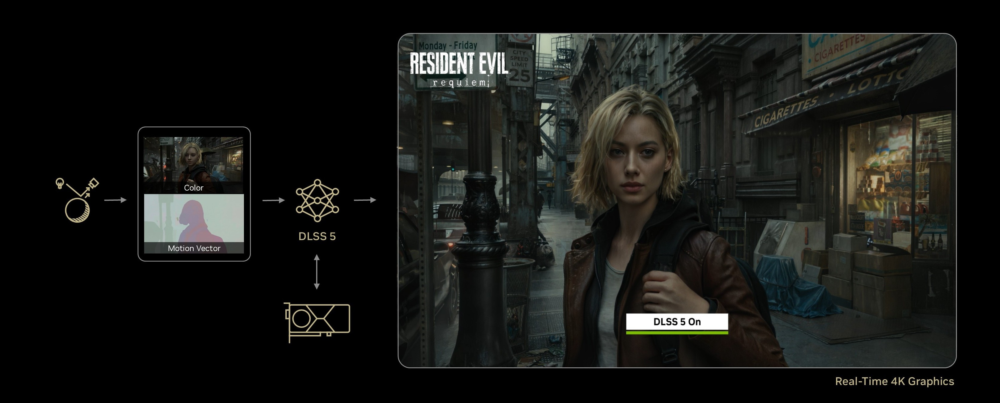

发布日期: 2026年3月17日
报告来源: NVIDIA官方新闻稿及GTC 2026主题演讲
编辑: AI研究员
NVIDIA GTC 2026于3月16日在美国加州圣何塞SAP中心盛大开幕，CEO黄仁勋（Jensen Huang）发表了长达数小时的主题演讲。本次GTC标志着AI计算进入全新时代——从生成式AI向代理式AI（Agentic AI）和物理AI（Physical AI）的历史性转变。
核心亮点包括： - Vera Rubin平台 - 7芯片全栈AI架构正式量产 - DLSS 5 - 实时神经渲染技术的重大突破 - NemoClaw/OpenClaw - 企业级AI代理开源平台 - 太空数据中心 - 将AI计算能力延伸至太空轨道 - DGX Spark/Station - 桌面级AI超级计算机
📊 Vera Rubin平台架构图
（图片描述：Vera Rubin NVL72机架展示 - 集成72颗Rubin GPU和36颗Vera CPU，通过NVLink 6互联）
NVIDIA Vera Rubin平台是NVIDIA历史上最雄心勃勃的AI基础设施项目，集成了7款全新芯片，构成一个完整的数据中心级AI超级计算机。
七大核心组件：
| 组件 | 功能定位 | 技术规格 |
|---|---|---|
| Vera CPU | 通用计算处理器 | 专为代理式AI设计 |
| Rubin GPU | AI加速计算 | 72颗GPU集成于NVL72机架 |
| NVLink 6 Switch | 高速互联 | 新一代GPU间互联技术 |
| ConnectX-9 SuperNIC | 网络接口 | 超高速网络连接 |
| BlueField-4 DPU | 数据处理单元 | 存储与数据处理加速 |
| Spectrum-6 Ethernet | 以太网交换 | AI工厂网络骨干 |
| Groq 3 LPU | 推理加速器 | 低延迟推理处理 |
1. Vera Rubin NVL72 GPU机架 - 集成72颗Rubin GPU和36颗Vera CPU - 通过NVLink 6互联 - 训练大型MoE模型所需GPU数量仅为Blackwell平台的1/4 - 推理吞吐量每瓦特提升高达10倍 - 每token成本降低至1/10
2. Vera CPU机架 - 基于NVIDIA MGX的液冷基础设施 - 集成256颗Vera CPU - 专为强化学习和代理式AI工作负载设计 - 相比传统CPU效率提升2倍，速度提升50%
3. Groq 3 LPX推理加速机架 - 256颗LPU处理器 - 128GB片上SRAM - 640 TB/s扩展带宽 - 与Vera Rubin NVL72联合部署时，推理吞吐量每兆瓦提升35倍 - 万亿参数模型收入机会提升10倍
4. BlueField-4 STX存储机架 - AI原生存储基础设施 - 通过NVLink扩展GPU内存 - DOC A Memos框架使推理吞吐量提升5倍
5. Spectrum-6 SPX以太网机架 - 专为AI工厂东西向流量优化 - 共封装光学技术实现5倍光功率效率提升 - 相比传统可插拔收发器，弹性提升10倍
“Vera Rubin是一个代际飞跃——七款突破性芯片、五个机架、一台巨型超级计算机——专为AI的每个阶段而构建。代理式AI的拐点已经到来，Vera Rubin开启了历史上最宏大的基础设施建设计划。”
—— Jensen Huang, NVIDIA创始人兼CEO
“企业和开发者正在使用Claude进行日益复杂的推理、代理式工作流和关键任务决策。这需要能够跟上的基础设施。NVIDIA的Vera Rubin平台为我们提供了计算、网络和系统设计能力，使我们能够持续交付，同时推进客户所依赖的安全性和可靠性。”
—— Dario Amodei, Anthropic CEO兼联合创始人
“NVIDIA基础设施是让我们不断突破AI前沿的基础。借助NVIDIA Vera Rubin，我们将以更大规模的强大模型和代理运行，并为数亿人提供更快、更可靠的系统。”
—— Sam Altman, OpenAI CEO
信源: NVIDIA Vera Rubin Platform
LPU（Language Processing Unit，语言处理单元）是一种专为AI推理工作负载设计的专用加速器，与通用GPU不同，LPU从架构层面针对大语言模型的低延迟、高吞吐推理进行了深度优化。
Groq公司背景： - 创立时间：2016年 - 核心创新：首创LPU架构，首款专为推理设计的芯片 - 技术理念：通过定制硅片实现低延迟、低成本推理 - 市场定位：专注推理加速，而非训练
信源: Groq官网
硬件配置： | 参数 | 规格 | |——|——| | LPU处理器数量 | 256颗 | | 片上SRAM | 128GB | | 扩展带宽 | 640 TB/s | | 冷却方式 | 全液冷 | | 基础架构 | NVIDIA MGX |
架构特点： - 确定性推理加速：LPUfleet作为巨型单处理器运行，实现快速、确定性推理 - 内存带宽优化：专为万亿参数模型和百万token上下文设计 - 与GPU协同：LPX与Rubin GPU联合计算，每层AI模型协同处理每个输出token
与Vera Rubin NVL72联合部署时： - 推理吞吐量：每兆瓦提升35倍 - 收入机会：万亿参数模型提升10倍 - 能效比：显著优于纯GPU方案
应用场景： - 超低延迟Agentic AI系统 - 大上下文窗口应用（百万token） - 实时对话AI - 高频推理工作负载
1. 延迟敏感型应用 - 传统GPU架构在推理延迟方面存在瓶颈 - LPU专为低延迟设计，满足实时交互需求
2. 成本优化 - 推理成本是AI大规模部署的关键瓶颈 - LPU通过架构优化显著降低每token成本
3. 与GPU的协同 - Vera Rubin平台采用异构计算架构 - GPU负责通用AI计算，LPU专攻推理加速 - 两者通过NVLink和高速网络协同工作
LLM推理的两个阶段：
| 阶段 | 计算特点 | 负责芯片 | 任务 |
|---|---|---|---|
| Prefill | 计算密集型 | Rubin GPU | 处理输入prompt |
| Decode | 带宽密集型 | Groq 3 LPU | 生成输出token |
为什么需要这种分工？ - Rubin GPU：50 petaFLOPS计算性能，适合处理复杂的prompt理解和上下文分析 - Groq 3 LPU：150 TB/s内存带宽（是Rubin GPU的7倍），适合高速生成token
Groq 3 LPU技术规格详情： | 参数 | 数值 | 对比 | |——|——|——| | 计算性能 | 1.2 petaFLOPS (FP8) | 约Rubin GPU的1/40 | | 片上内存 | 500 MB | 约Rubin GPU的1/500 | | 内存带宽 | 150 TB/s | 7倍于Rubin GPU | | 架构优化 | 专为decode阶段设计 | 极致带宽优化 |
Ian Buck（NVIDIA Hyperscale和HPC副总裁）解释： > “LPU严格针对那种极端、低延迟的token生成进行了优化，提供每秒1000+ token的速率。当然，代价是你需要很多芯片才能实现这种性能。每芯片每秒token数实际上相当低。”
定价策略： - NVIDIA预测：推理提供商可收取高达$45/百万token - 对比：OpenAI GPT-5.4 API当前收费约$15/百万token - 溢价原因：超低延迟、高吞吐、确定性性能
目标客户： - 模型构建者 - 服务提供商 - 需要服务万亿+参数模型的企业
单LPX机架限制： - 256颗LPU = 128GB超高速内存 - 不足以容纳万亿参数模型（4-bit精度需要512GB+）
解决方案： - 多个LPX机架集群 - 支持万亿参数模型 serving - Spectrum-X高速互联
项目变更： - 原计划：Rubin CPX专用prefill处理器（GDDR7显存）+ Rubin GPU解码 - 现状：放弃Rubin CPX，改用Groq LPU方案 - 原因：Groq LPU在decode阶段性能更优
Ian Buck确认： > “将LPU和LPX集成到我们的平台以优化decode，这是我们目前的重点。”
NVIDIA方案： - Rubin GPU（prefill）+ Groq LPU（decode）
AWS方案： - Trainium 3（prefill）+ Cerebras WSE-3（decode） - Cerebras WSE-3：44GB SRAM，晶圆级芯片
市场趋势： - 异构计算成为AI推理主流架构 - GPU+专用解码加速器模式被广泛采纳 - 高端推理市场（premium tokens）快速增长
CUDA支持： - 当前：LPU不直接支持CUDA - 架构：LPU作为Vera NVL72平台的加速器 - GPU运行CUDA，LPU处理decode加速
未来展望： - 初期专注于模型构建者和服务提供商 - 软件生态逐步完善
AWS与NVIDIA扩大合作，部署包括： - 超过100万颗NVIDIA GPU - NVIDIA Groq 3 LPU用于超低延迟推理 - 全面支持Blackwell和Rubin架构
信源: NVIDIA GTC 2026 Keynote Live Blog
信源: The Register - Nvidia slaps $20B Groq tech into massive new LPX racks

NVIDIA DLSS 5被黄仁勋称为“图形学的GPT时刻”，是自2018年实时光线追踪以来NVIDIA在计算机图形领域最重大的突破。
核心技术： - 实时神经渲染模型：为像素注入照片级真实感的光照和材质 - 3D引导生成：基于游戏3D内容和艺术意图的确定性生成 - 端到端AI理解：单帧分析即可理解复杂场景语义
DLSS 5能够处理以下复杂视觉效果： - 次表面散射：皮肤透光效果 - 织物光泽：细腻的面料质感 - 头发光照交互：真实的发丝光影 - 环境光照条件：前光、背光、阴天等不同场景
首发支持游戏： - AION 2 - Assassin’s Creed Shadows（刺客信条：影） - Starfield（星空） - Hogwarts Legacy（霍格沃茨之遗） - Resident Evil Requiem（生化危机：安魂曲） - The Elder Scrolls IV: Oblivion Remastered - 等20+款大作
主要合作伙伴： Bethesda、CAPCOM、Hotta Studio、NetEase、NCSOFT、S-GAME、Tencent、Ubisoft、Warner Bros. Games
DLSS 5将于2025年秋季正式发布
“在NVIDIA发明可编程着色器25年后，我们正在再次重塑计算机图形学。DLSS 5是图形学的GPT时刻——将手工渲染与生成式AI相结合，在保留艺术家创作表达所需控制力的同时，实现视觉真实感的巨大飞跃。”
—— Jensen Huang
信源: NVIDIA DLSS 5 Press Release
OpenClaw是由开发者Peter Steinberger创建的开源项目，被黄仁勋称为“人类历史上最受欢迎的开放源码项目”。
核心特性： - 代理式计算机的操作系统 - 一条命令即可部署AI代理 - 支持工具扩展和上下文配置
“OpenClaw让人们更接近AI，帮助创造一个每个人都有自己代理的世界。”
—— Peter Steinberger, OpenClaw创作者
NVIDIA NemoClaw是为OpenClaw社区推出的企业级AI代理堆栈。
安装方式：
核心组件：
| 组件 | 功能 |
|---|---|
| NVIDIA Nemotron | 开放模型家族 |
| NVIDIA OpenShell | 安全运行时环境 |
| Privacy Router | 隐私路由控制 |
| Agent Toolkit | 代理开发工具集 |
OpenShell为自主代理提供： - 策略执行：基于策略的安全控制 - 网络隔离：网络流量管控 - 隐私路由：数据隐私保护 - 沙箱环境：隔离执行空间
NemoClaw支持在以下平台运行： - NVIDIA GeForce RTX PC/笔记本 - NVIDIA RTX PRO工作站 - NVIDIA DGX Station - NVIDIA DGX Spark
“Mac和Windows是个人电脑的操作系统。OpenClaw是个人AI的操作系统。这是行业期待已久的时刻——软件新复兴的开端。”
—— Jensen Huang
采用NemoClaw/OpenClaw的主要企业： - Adobe：创意和营销代理工作流 - Atlassian：Rovo AI代理策略 - Box：企业文件系统代理 - Cadence：ChipStack AI SuperAgent - Cisco：AI Defense安全保护 - CrowdStrike：安全检测与响应 - ServiceNow：自主工作流管理
信源: NVIDIA NemoClaw Press Release
🛰️ 太空数据中心概念图
（图片描述：Space-1 Vera Rubin - 轨道数据中心（ODC）概念图，展示在轨AI计算平台）
NVIDIA宣布推出Space-1 Vera Rubin模块，将数据中心级AI性能带入太空轨道数据中心（ODC）。
技术规格： - 相比H100 GPU，AI计算性能提升25倍 - 支持大型语言模型和基础模型在轨运行 - 紧凑型模块化设计 - 适用于尺寸、重量和功率（SWaP）受限环境
| 平台 | 定位 | 应用场景 |
|---|---|---|
| Space-1 Vera Rubin | 高性能AI | ODC、地理空间智能、自主太空操作 |
| IGX Thor | 工业级边缘 | 关键任务环境、实时AI处理 |
| Jetson Orin | 超紧凑边缘 | 卫星、在轨服务载具、感知平台 |
| RTX PRO 6000 | 地面处理 | 大规模地理空间数据分析 |
Aetherflux： - 开创太空能源与计算新范式 - 利用太阳能驱动在轨高性能AI
Kepler Communications： - 构建下一代太空数据网络 - 使用Jetson Orin实现卫星智能数据管理
Planet Labs： - 每日对地球成像 - 使用NVIDIA CorrDiff AI模型实现近实时洞察
Sophia Space： - 构建模块化、被动冷却的托管计算平台 - 将云灵活性带入太空
Starcloud： - 构建专用轨道数据中心 - 首次实现在轨训练与推理工作负载
“太空计算，这最后的边疆，已经到来。当我们部署卫星星座并向太空深处探索时，智能必须存在于数据生成的任何地方。跨越空间和地面系统的AI处理实现了实时感知、决策和自主性，将轨道数据中心转化为发现工具，将航天器转化为自主导航系统。”
—— Jensen Huang
灾难响应与环境监测： - AI加速处理高分辨率影像 - 实时识别野火、洪水、石油泄漏
气候与天气预测： - 精确追踪天气模式 - 长期气候变化高级分析
基础设施与资源管理： - 自动化复杂目标检测 - 全球能源网、交通网络、农业健康自主监测
信源: NVIDIA Space Computing Press Release
💻 DGX Spark和DGX Station
（图片描述：NVIDIA DGX Spark（左）和DGX Station（右）- 桌面级AI超级计算机，世界上最小的AI超算）
世界上最小的AI超级计算机，让数百万研究人员、数据科学家、机器人开发者和学生能够在桌面上进行生成式和物理AI开发。
核心技术： - GB10 Grace Blackwell超级芯片 - 第五代Tensor Core - FP4支持 - 高达1,000万亿次/秒的AI计算性能 - NVLink-C2C互联技术（5倍于PCIe Gen5带宽）
集群能力： - 支持最多4台系统集群 - 创建紧凑型“桌面数据中心” - 线性性能扩展
适用模型： - NVIDIA Cosmos Reason世界基础模型 - NVIDIA GR00T N1机器人基础模型 - 支持最新AI推理模型微调和推理
世界上最强大的桌面超级计算机，基于GB300 Grace Blackwell Ultra桌面超级芯片。
技术规格： - 784GB相干内存空间 - 72核NVIDIA Grace CPU - NVIDIA Blackwell Ultra GPU - 最新一代Tensor Core - FP4精度支持 - NVIDIA ConnectX-8 SuperNIC（800Gb/s网络）
使用场景： - 大规模训练与推理工作负载 - 长时间思考的自主代理开发 - 可运行高达1万亿参数的开放模型 - 支持气隙配置（适用于受监管行业）
DGX Spark和DGX Station与NemoClaw配对，提供： - 完整的自主代理开发平台 - 本地安全运行环境 - 从桌面到数据中心的无缝扩展 - 预装NVIDIA AI软件栈
DGX Spark： - 今天开放预订 - 制造商：ASUS、Dell、HP、Lenovo
DGX Station： - 今年晚些时候上市 - 制造商：ASUS、BOXX、Dell、HP、Lambda、Supermicro
信源: NVIDIA DGX Spark and DGX Station Press Release
NVIDIA扩展其开放模型家族，推出Nemotron 3系列，专为代理式、物理和医疗AI设计。
模型变体：
| 模型 | 定位 | 能力 |
|---|---|---|
| Nemotron 3 Ultra | 前沿级智能 | 在Blackwell平台上使用NVFP4格式，吞吐量效率提升5倍 |
| Nemotron 3 Omni | 多模态理解 | 集成音频、视觉和语言，从视频和文档提取洞察 |
| Nemotron 3 VoiceChat | 实时语音对话 | 同时听和说，集成ASR、LLM、TTS |
| Nemotron Safety | 安全检测 | 跨文本和图像检测不安全内容 |
采用企业： Automation Anywhere、CodeRabbit、CrowdStrike、Cursor、Factory、Perplexity、ServiceNow
Cosmos是NVIDIA的世界基础模型（WFM）平台，专为物理AI开发设计。
三大核心能力：
1. Cosmos Transfer（合成数据生成） - 摄取结构化视频输入（分割图、深度图、激光雷达等） - 生成可控的照片级真实视频输出 - 将3D模拟转化为照片级视频
2. Cosmos Predict（智能世界生成） - 从多模态输入（文本、图像、视频）生成虚拟世界状态 - 多帧生成能力 - 预测中间动作或运动轨迹
3. Cosmos Reason（物理AI多模态推理） - 链式思维推理理解视频数据 - 预测交互结果（如人进入人行横道、箱子从货架掉落） - 可用作高级规划器
采用企业： 1X、Agility Robotics、Figure AI、Foretellix、Skild AI、Uber
GR00T N1.7： - 开放推理视觉语言动作（VLA）模型 - 专为类人机器人设计 - 现已可商业部署 - 支持高级灵巧控制
GR00T N2（预览）： - 基于DreamZero研究的下一代机器人基础模型 - 新世界观动作模型架构 - 在新环境中完成新任务的成功率比领先VLA模型高2倍以上 - 目前在MolmoSpaces和RoboArena排行榜上排名第一 - 预计2025年底发布
采用企业： AGIBOT、Humanoid、LG Electronics、NEURA Robotics、Noble Machines
NVIDIA启动Nemotron联盟，汇聚全球领先AI实验室共同推进开放前沿模型。
创始成员： - Black Forest Labs（多模态生成模型） - Cursor（实时代码AI） - LangChain（代理框架） - Mistral AI（高效可定制模型） - Perplexity（对话式AI搜索） - Reflection AI（可靠开放系统） - Sarvam（印度本土语言AI） - Thinking Machines Lab（前OpenAI团队）
首个合作项目： Mistral AI与NVIDIA联合开发基础模型，将在NVIDIA DGX Cloud上训练，作为Nemotron 4系列的基础。
信源: - NVIDIA Expands Open Model Families - NVIDIA Cosmos Press Release - Nemotron Coalition Press Release
NVIDIA正与全球机器人生态系统合作，包括领先的机器人大脑开发者、工业机器人巨头和类人机器人先驱，将生产规模的物理AI带入现实世界。
核心平台： - NVIDIA Isaac：模拟框架 - NVIDIA Cosmos：世界基础模型 - NVIDIA GR00T：机器人基础模型 - NVIDIA Omniverse：物理AI操作系统 - NVIDIA Jetson Thor：机器人计算平台
全球安装量超过200万台的机器人制造商： - FANUC - ABB Robotics - YASKAWA - KUKA
这些公司将NVIDIA Omniverse库和Isaac模拟框架集成到其虚拟调试解决方案中，通过物理精确的虚拟孪生开发和验证复杂机器人应用。
以下公司正在使用NVIDIA技术构建下一代类人机器人： - 1X：使用Cosmos Predict和Transfer训练NEO Gamma - Agility Robotics：Digit机器人物料搬运自动化 - Boston Dynamics：Atlas机器人 - Figure AI：人形机器人开发 - Apptronik：Apollo人形机器人
开发通用机器人大脑的公司： - FieldAI - Skild AI - World Labs - Generalist AI
使用Cosmos世界模型进行数据生成，Isaac模拟框架进行策略验证。
手术机器人合作伙伴： - CMR Surgical - Johnson & Johnson MedTech - Medtronic - Moon Surgical - Rob Surgical
医疗机器人专用工具： - Open-H：全球最大医疗机器人数据集（776小时手术视频） - Cosmos-H：医疗领域物理合成数据生成 - GR00T-H：医疗VLA模型 - Rheo：医院环境物理精确模拟
“物理AI已经到来——每家工业公司都将成为机器人公司。NVIDIA的全栈平台——涵盖计算、开放模型和软件框架——是机器人行业的基础，联合全球生态系统构建将为下一代工厂、物流、交通和基础设施提供动力的智能机器。”
—— Jensen Huang
信源: NVIDIA Physical AI Press Release
Amazon Web Services (AWS)： - 部署超过100万颗NVIDIA GPU - 支持Blackwell和Rubin架构 - RTX PRO 4500 Blackwell Server Edition首发支持 - 联合开发Nemotron模型的强化微调（RFT）
Microsoft Azure： - 已部署数十万颗液冷Grace Blackwell GPU - 首家点亮Vera Rubin NVL72系统的超大规模云服务商 - 支持Azure Local主权AI - Foundry平台集成Nemotron模型
Google Cloud： - 在Vertex AI Model Garden提供Cosmos WFM - 集成NVIDIA AI基础设施
Oracle Cloud Infrastructure (OCI)： - 提供GPU加速解决方案 - 支持Ascendance航空模拟
Cadence： - ChipStack AI SuperAgent：自主芯片设计代理 - Fidelity：GPU加速CFD仿真，性能提升34倍
Dassault Systèmes： - 3DEXPERIENCE平台上的Virtual Companions AI代理 - SIMULIA Abaqus和PowerFlow支持Rivian车辆仿真
Siemens： - Fuse EDA AI Agent：自主编排半导体和PCB工作流 - Digital Twin Composer：基于Omniverse的工业元宇宙
Synopsys： - AgentEngineer：半导体和系统设计多代理框架 - PrimeSim：GPU加速芯片设计验证
PTC： - Onshape CAD到Isaac Sim的机器人设计-仿真工作流
采用NVIDIA DRIVE Hyperion的L4级自动驾驶： - BYD（比亚迪） - Geely（吉利） - Isuzu（五十铃） - Nissan（日产） - Hyundai Motor & Kia（现代汽车与起亚）
车辆设计与仿真： - Honda：使用Synopsys Ansys Fluent进行空气动力学仿真，速度提升34倍 - JLR：在AWS上使用Siemens Simcenter STAR-CCM+ - Mercedes-Benz：使用Omniverse测试人形机器人Apollo
自动驾驶合作： - Uber：将自动驾驶车辆部署到其网约车网络
采用Omniverse和Mega的企业： - Foxconn：模拟工业机械手、人形机器人和移动机器人 - Hyundai Motor Group：模拟Boston Dynamics Atlas机器人装配线 - Mercedes-Benz：优化车辆装配操作 - Pegatron：开发基于Metropolis的视频分析代理 - KION Group：与Siemens、Accenture合作自主仓库解决方案
采用NVIDIA AI Factory的企业： - Roche：部署超过3,500颗Blackwell GPU - General Motors：采用Omniverse增强工厂和培训平台 - PepsiCo：数字化转型 - Samsung、SK hynix：内存生产验证加速 - TSMC：先进制造工作负载加速
Adobe战略合作伙伴关系： - 下一代Adobe Firefly模型开发 - 创意、营销和代理式工作流 - 基于Omniverse的云原生3D数字孪生解决方案 - NemoClaw集成评估
采用Nemotron和Agent Toolkit的公司： - Cursor：实时代码AI - Perplexity：对话式AI搜索 - Together AI：推理端点提供 - LangChain：代理开发框架（超过10亿次下载）
NVIDIA与T-Mobile合作： - 与Nokia和开发者生态系统合作 - 在分布式边缘AI网络上实现物理AI应用 - 将基站演变为边缘AI平台
DSX AI Factory参考设计合作伙伴： - Schneider Electric：ETAP平台集成 - Vertiv：Vertiv OneCore Rubin DSX预制解决方案 - Trane Technologies：热管理优化 - Eaton：SimReady资产提供
电网现代化： - Emerald AI：DSX Flex集成 - GE Vernova：数字孪生能力扩展 - Siemens Energy：Noedra数字孪生平台
信源: - Adobe Partnership - Industrial Software Giants - DRIVE Hyperion Partners
定位：AI工厂的分布式“操作系统”
核心能力： - 在Blackwell GPU上提升推理性能高达7倍 - 降低token成本，增加收入机会 - 智能“流量控制”分配推理工作 - GPU与低成本存储间数据移动 - 代理式AI长提示路由优化
采用企业： AWS、Azure、Google Cloud、OCI、CoreWeave、Crusoe、Lambda、Nebius、Together AI、Cursor、Perplexity、ByteDance、PayPal、Pinterest等
NVIDIA GTC 2026标志着AI发展的三个重要转折点：
NVIDIA正在构建前所未有的开放AI生态系统： - 开放模型：Nemotron、Cosmos、GR00T、Alpamayo、BioNeMo、Earth-2 - 开放软件：Dynamo、OpenShell、NemoClaw、Omniverse - 开放标准：OpenUSD、CUDA - 开放合作：Nemotron Coalition汇聚全球AI实验室
Feynman架构（Vera Rubin之后）： - Rosa CPU：以罗莎琳德·富兰克林命名 - LP40：下一代LPU - BlueField-5和CX10 - Kyber：铜缆和共封装光学扩展 - Spectrum-class光学扩展
“AI已经改变了计算堆栈的每一层。由此出现了一类专为AI原生开发者和AI原生应用设计的新型计算机。借助这些新的DGX个人AI计算机，AI可以从云服务扩展到桌面和边缘应用。”
—— Jensen Huang
本报告基于NVIDIA官方新闻稿和GTC 2026主题演讲内容整理，所有信源链接已标注。报告生成时间：2026年3月17日。